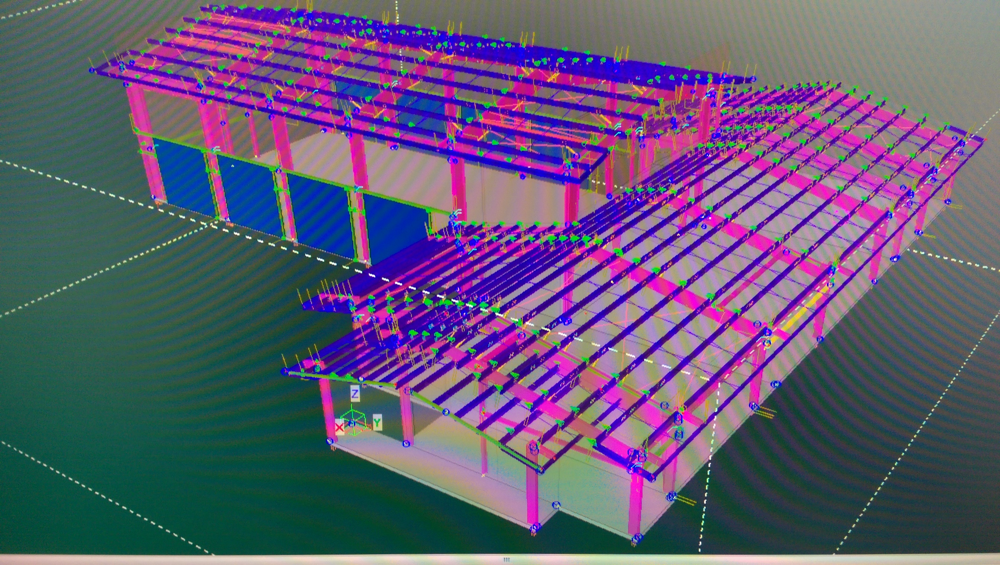

One very important thing to know about me, is that I have a dog named Maslow. He's a Staffordshire Bull Terrier, and he's just a big ball of energy.

I'm also engaged to this amazing woman.
At the moment I'm a "structural steel detailer" and I do BIM 3D modeling for a living. I get a set of plans from the structural engineer, then I build a production ready 3D model using Tekla Structures.
Tekla Structures is largely responsible for my interest in computer science. Our developers use the C# programming language and WPF to create tools that make our lives easier. They cut out much of the hand-modeling that leads to quality errors. Tekla Structures also has some interesting features that essentially let detailers "program" their own tools. They are called "custom components".
If this all sounds fascinating, you can learn more about the software by clicking on the link provided below.
Tekla StructuresThe company I work for does a lot of big projects, one of them you may be aware of, is the new Zion's Bank REAL soccer stadium in Herriman.
Along with the tools I use at work, technologies that are emerging in popularity such as machine learning and deep learning using artificial neural networks have also captured my interest. After reading about the Go match between Lee Sedol and AlphaGo, I couldn't learn enough. Now I'm back in school and my goal is eventually to be a machine learning engineer.
Here's a link to DeepMind's web page on AlphaGo, just in case you want to check it out.
AlphaGoWhen I'm not working and going to school (who am I kidding, when does that ever happen?) I also really enjoy music. Listening to it, playing it, it doesn't really matter.
Etherial guitars makes the coolest guitars around. Light weight carbon-fiber body with a stainless steel fretboard, what's not to like? One day, I would like to own one.

If you want to check out some of their cool designs, here's a link to their website.
Etherial GuitarsSince I'm rambling about music, here's a table of some of my favorite songs. It has the song name, name of the artist, and the number of strings on the guitar it's played on.
| My Favorite Songs | ||
|---|---|---|
| Song Name | Artist Name | # of Strings |
| Cascade | Animals As Leaders | 8 |
| CAFO | Animals As Leaders | 8 |
| Stranger Things | Periphery | 8 |
| It's Not Safe to Swim Today | Veil of Maya | 6 |
| Unbreakable | Veil of Maya | 6 |
Here are some links, if you're curious.